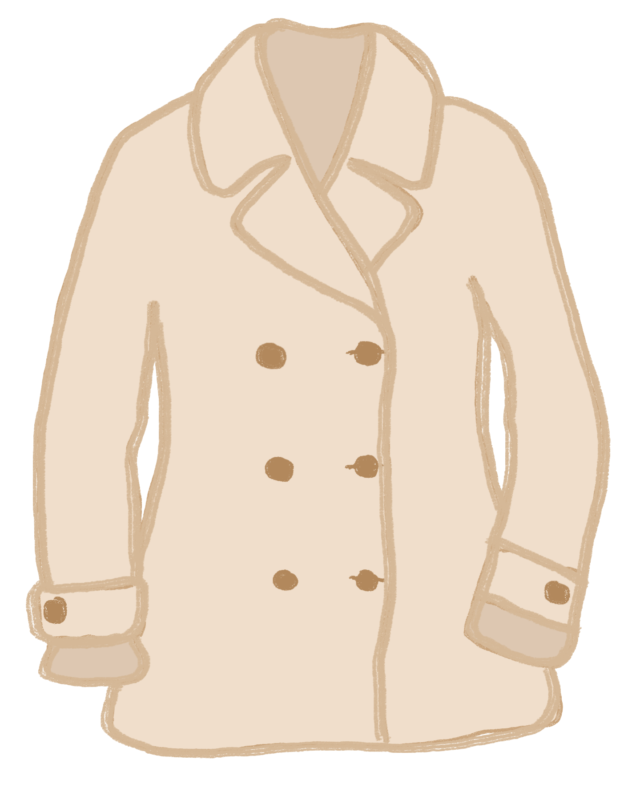
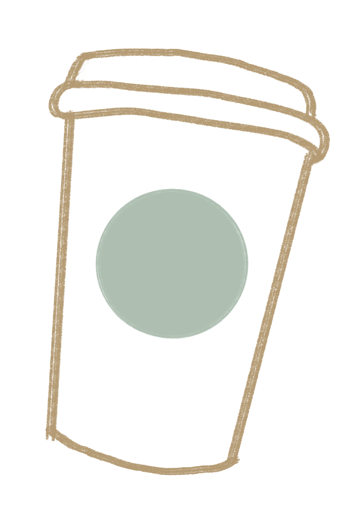
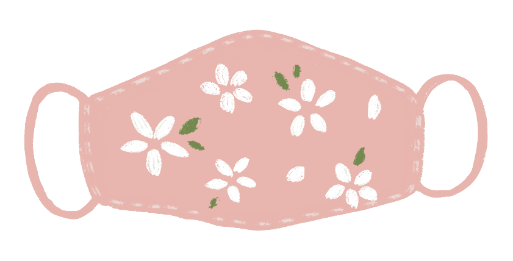
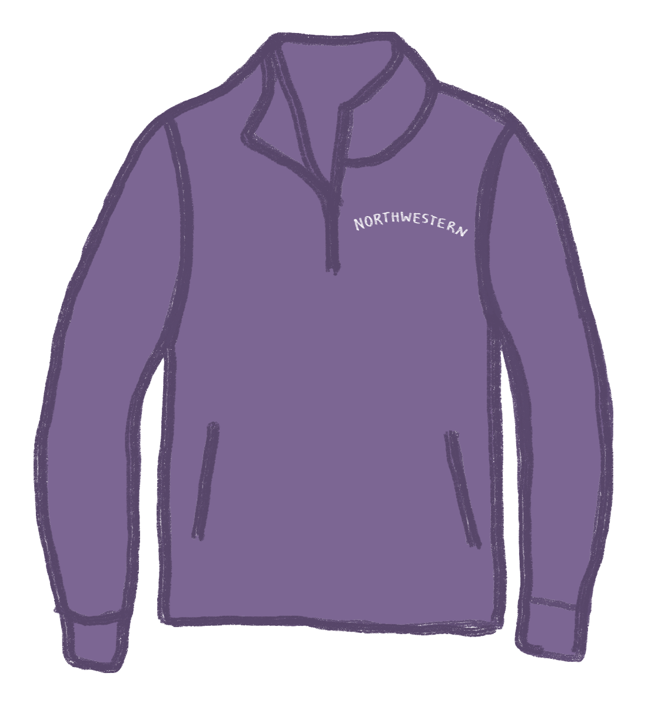
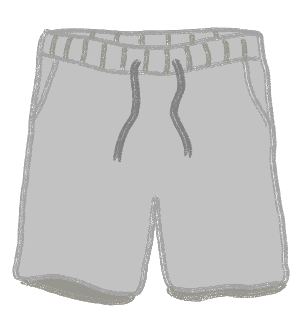

As the Evanston winter trudges on, you may find yourself feeling languishing, listless, lethargic. It’s so cold outside, you just want to burrow up in your cozy dorm bed, wearing a Willie the Wildcat sweatshirt and Shrek undies, and kiss the outside world goodbye. But babe, hang on! You can’t do that – you have a COVID test at the Jacobs Center. And you’ll be there for a while – don’t you want to be the hottest person in line? Here’s some cute lewks just for the occasion.
    Look 1: The “Job Interview”
Perfect For:
- The tryhards who want to pretend that we still go out places professionally and publicly
- People whose besties are CAESAR and Handshake
Features:
- Peacoat and Starbucks pairing are essential here -- Starbucks must be something annoyingly high-functioning like hot black coffee with skim milk
- Black tights
- Loafers or other sort of practical but dressy shoe that is not well-suited to the snow
- Important! Shoe must be a lighter color than the tights. The more nauseating the contrast, the better.
Look 2: The “Just Jeans and a Cute Top”
Perfect For:
- Those who never know if you’ll meet the love of your life at the Jacobs Center. You lock eyes as you penetrate your respective nostrils with a swab, oozing sexual tension.
- People who dress up to go to the dining hall (It’s not that deep.)
Features
- Soft coat to show them you’re approachable.
- Target mask in a cute print to show that you’re quirky but practical
- Alluring, yet soft eye makeup: flirtatious eyelashes so you can gently bat away those COVID-19 test tears
- Most importantly: the capability to look delicate and graceful while you’re literally scraping the inside of your nostril with a cotton swab
Look 3: The “It’s Not Even that Cold Bro”
Perfect For
- Chad, Brad, and Thad
- Those who woke up with a hangover and REALLY need that COVID test, if you get our drift.
Features
- Gym shorts, even though it’s like 7 degrees outside, Jared
- Northwestern quarter-zip sweatshirt: Sko ‘Cats! (Alternate option: basketball jersey if you really want the ladies to know that you’re ~not cold~)